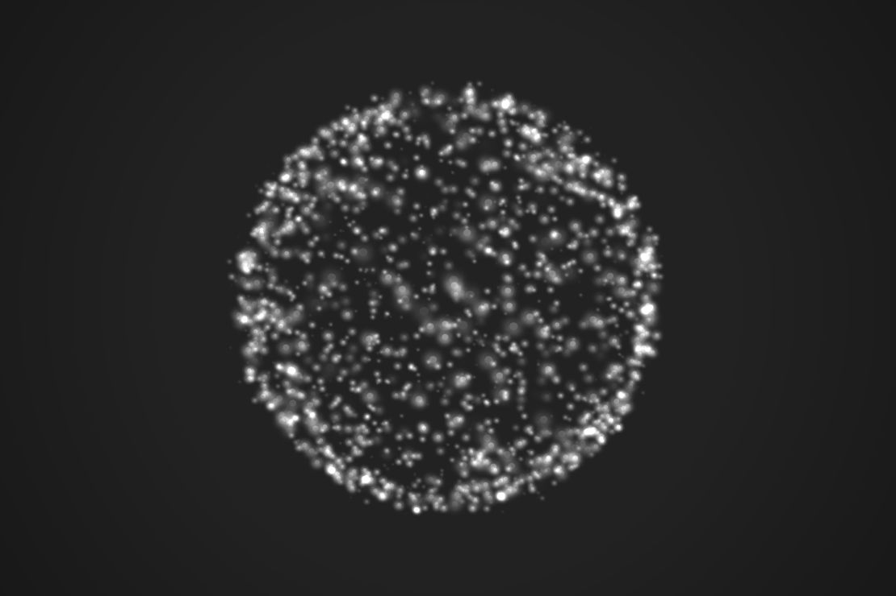
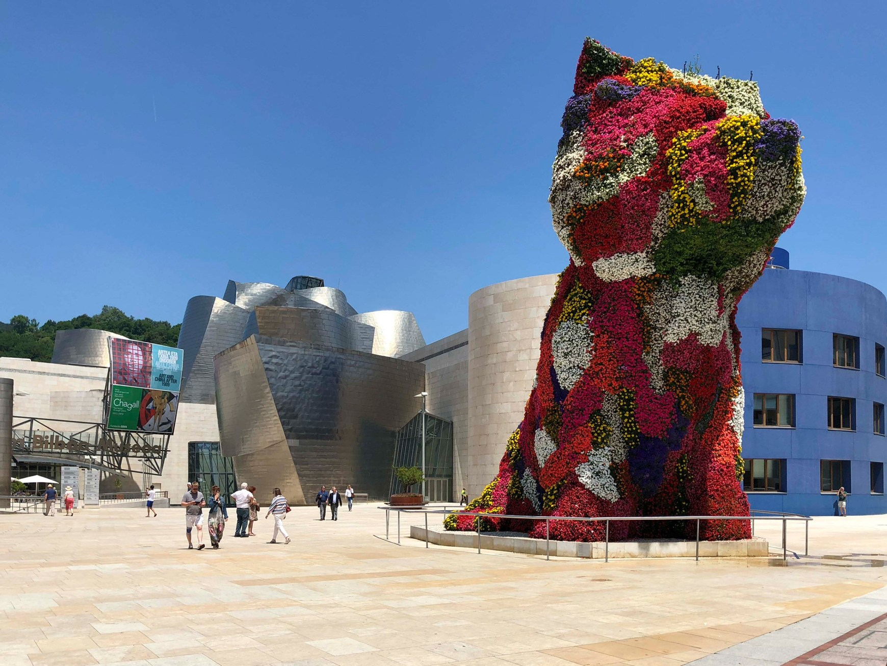

Moon, A project by Ai Weiwei and Olafur Eliasson, Beijing, November 3, 2013.
Ai Weiwei 1957-present


Sculpture Catal Hüyük, Hallbergsplatsen, Borås, Sweden, 2008.
Frank Stella 1936-present
Sculpture Puppy, 1992, Bilbao, Spain.
Jeff Koons 1955-present
